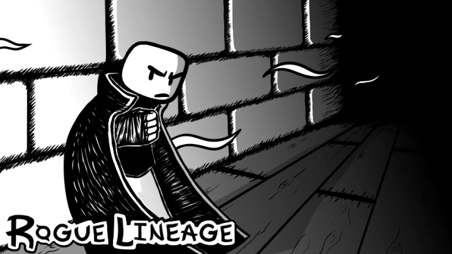

Rogue Lineage is a roblox game created by the developers at Monad Studios. A rouge-like PVP centered game whos progression, combat, and story have been heavily influenced by the community.
This website will focus as a Condensed wiki about the games many Mechanics. its contents are catored for those who have a slight interest in the game or begining their progression.
Player mechanics
All things related to the player and combat such as Classes,
Weapons and race.
Game mechanics
Core game mechanics that make players will experience, status effects, quests, etc.
World mechanics
The Things that populate the world of Gaia such as the various monsters
and teachers you will encounter on your journey.